768×1024 · darkOverflow: 0px · Footers: 1 · Stage minimum: 64px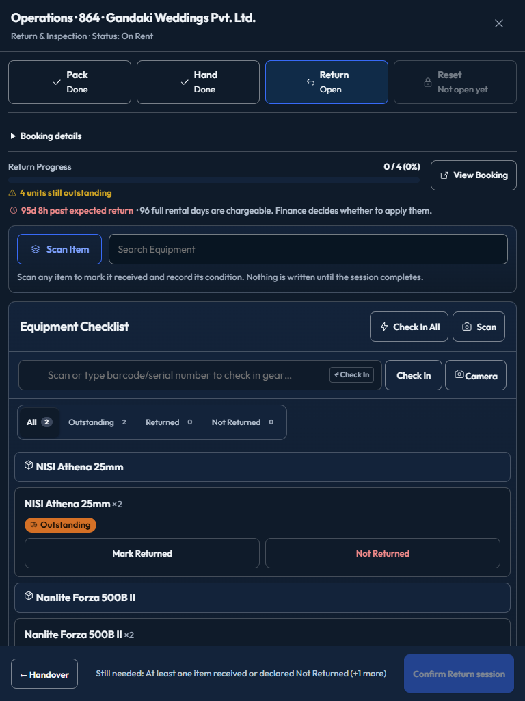Actions menu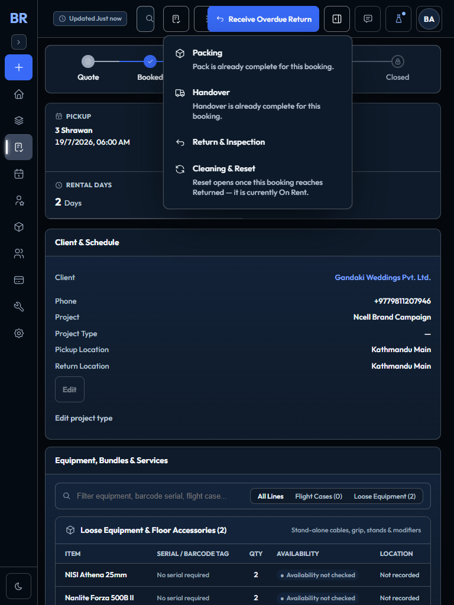
390×844 · lightOverflow: 0px · Footers: 1 · Stage minimum: 74px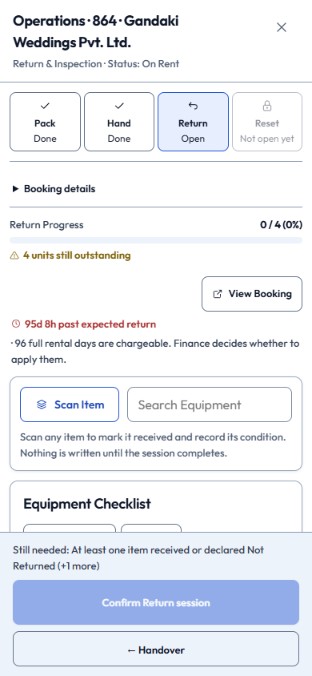Actions menu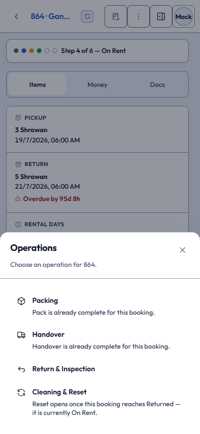
320×844 · lightOverflow: 0px · Footers: 1 · Stage minimum: 89px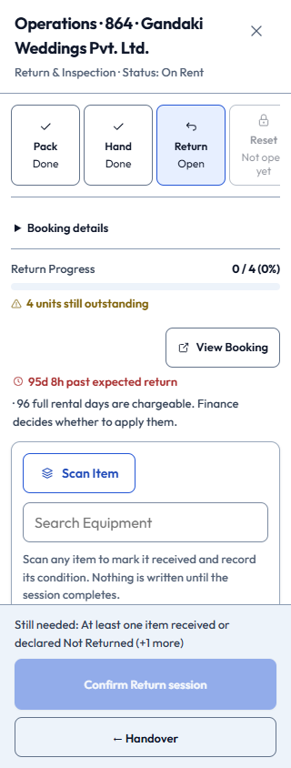Actions menu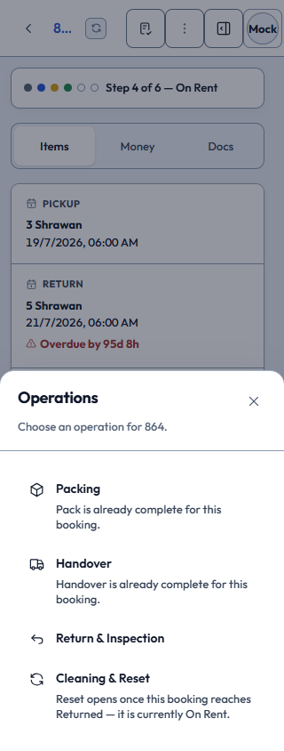
430×844 · light · forced colorsOverflow: 0px · Footers: 1 · Stage minimum: 74px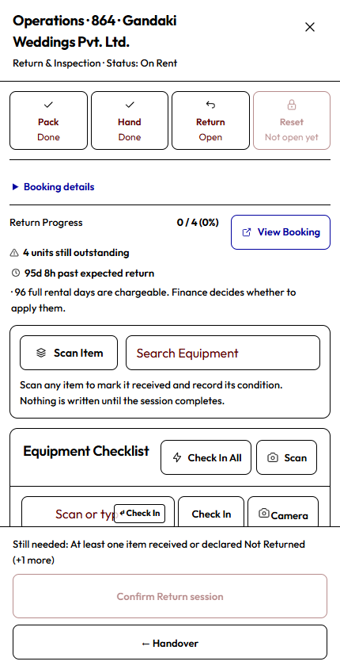Actions menu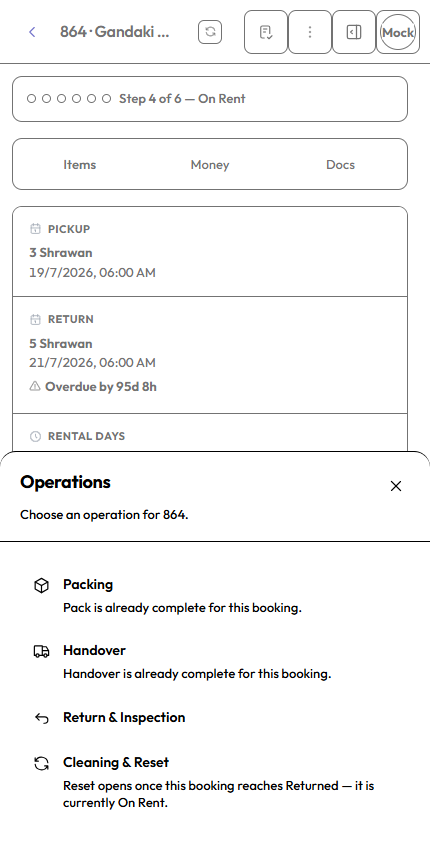
720×450 · light · 200%-equivalentOverflow: 0px · Footers: 1 · Stage minimum: 74px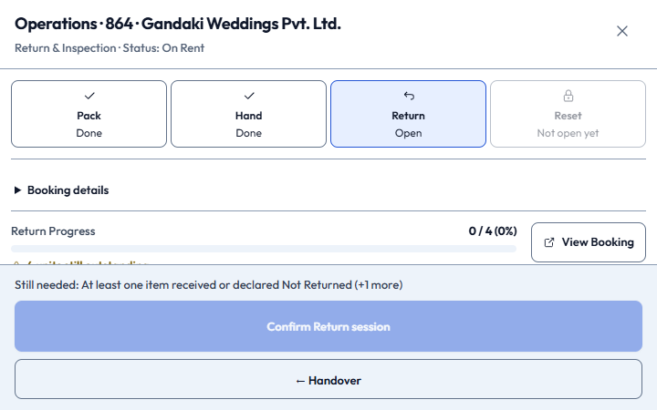Actions menu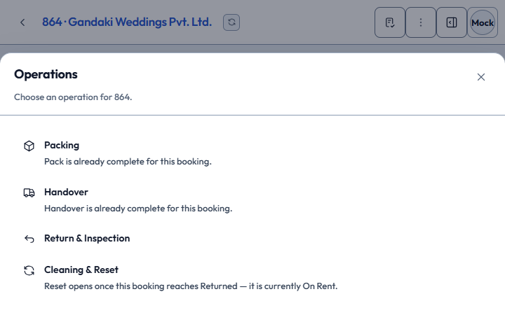
512×384 · dark · 200%-equivalentOverflow: 0px · Footers: 1 · Stage minimum: 74px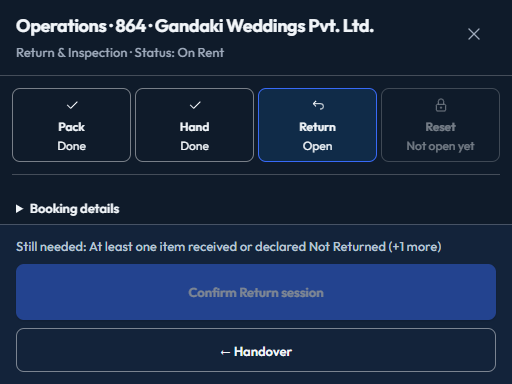Actions menu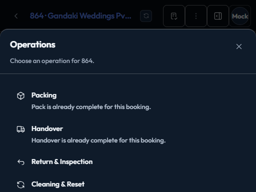